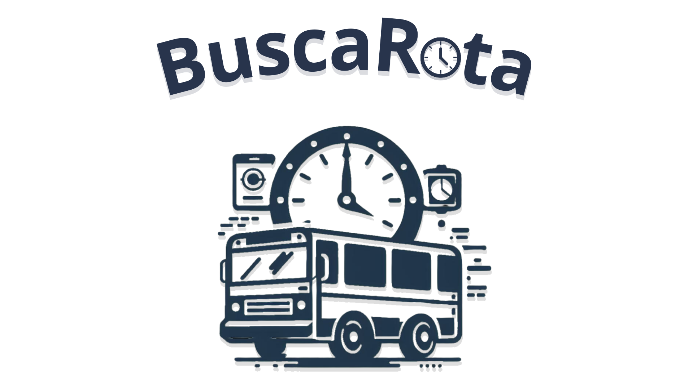

Bem-Vindo ao Busca Rota!

Tela de Home
Caso você tenha dúvidas referentes às buscas ou à visualização dos itinerários, vá no menu lateral e clique em "Usuário". Caso você tenha dúvidas referentes ao dashboard das informações sobre as requisições, vá no menu lateral e clique em "Empresa". Vale ressaltar que as rotas usadas foram do próprio site do Vai Camaçari, e do site oficial da STT de Camaçari.